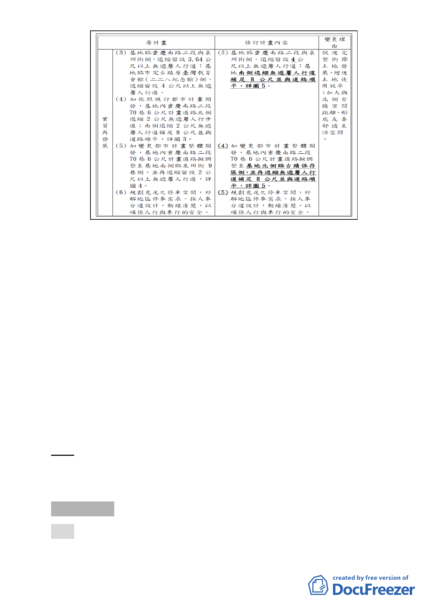

六、 事業及財務計畫
本案之財務計畫將與都市更新事業一同辦理，擬以權利變換
方式實施，變更計畫道路位置部分由實施者負責開闢，故上
述變更中有關土地取得費用與開闢所需工程費（198.9萬元，
預計107年完成），皆將依都市更新相關法令與程序列入共同
負擔處理。
七、 全案係市府102年9月27日府都規字第10236287203號函送到
會，並於102年9月28日起公開展覽30天。
八、 公民或團體所提意見：無。
九、 申請單位：臺北市政府財政局。
十、 辦理單位：臺北市政府。
十一、法令依據：都市計畫法第27條第1項第3款、都市更新條例
第5、6、8條。
決議：本案除計畫道路北移後以等面積調整，其寬度部分應予以
一致並修正計畫書、圖外，餘依市府公展計畫內容修正通
過。
審議事項 二
案名：「變更臺北市文山區指南段四小段 178、178-3 地號土地保
護區為休閒農業特定專用區主要計畫案」暨「擬訂臺北市
-4-